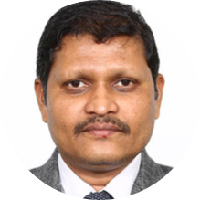

|  | Dr. Maheshwar DwivedyAssociate Professor School of Engineering and Technology Mechanical Department |
Maheshwar Dwivedy received his PhD degree from Birla Institute of Technology & Science, Pilani. He is currently Associate Professor in Mechanical Engineering Department at School of Engineering & Technology, BML Munjal University (BMU) – India. His current academic research areas focus on advanced machining with a focus on sustainable machining, incremental forming and thin film coatings. He is currently Asst Dean, Placement & Practice School at BML Munjal University. Prior to that he was the Area In-Charge of Mechanical Engineering Department at BMU from 2014-16. He also held the additional responsibility of In-Charge of Siemens Center of Excellence from 2016-19. He has authored and co-authored over 20 research papers in Journals such as Journal of Cleaner Production, Resources Conservation and Recycling, Waste Management, Environmental Development, Journal of Composite Materials, Polymer Composite, Fibers and Polymers, Journal of Reinforced Plastics and Composites amongst others. Prior to joining BMU, he was working as Lecturer at BITS-Pilani, Pilani Campus for about ten years during which he was a lead member of Academic Registration and Counseling Division and the single point of contact in the functioning of Academic Counseling Board. He has co-opted in instructional activities in several work integrated learning programs and contributed towards conducting BITS Online Admission Test (BITSSAT) for several years. An Undergraduate in Mechanical Engineering from the prestigious CET-Bhubaneswar, one of the leading Government Engineering Colleges in India affiliated to OUAT and master’s in Production Engineering from NIT-Rourkela, Maheshwar Dwivedy has been in Academics for the past 20 years.
| Dates | work |
|---|---|
| Date | Lecturer in Pilani |
| Date | Doctarate in Pilani |
| ios Development 🌟🌟🌟 | Photography🌟🌟 |
| web Development🌟🌟 | Painting🌟🌟🌟 |